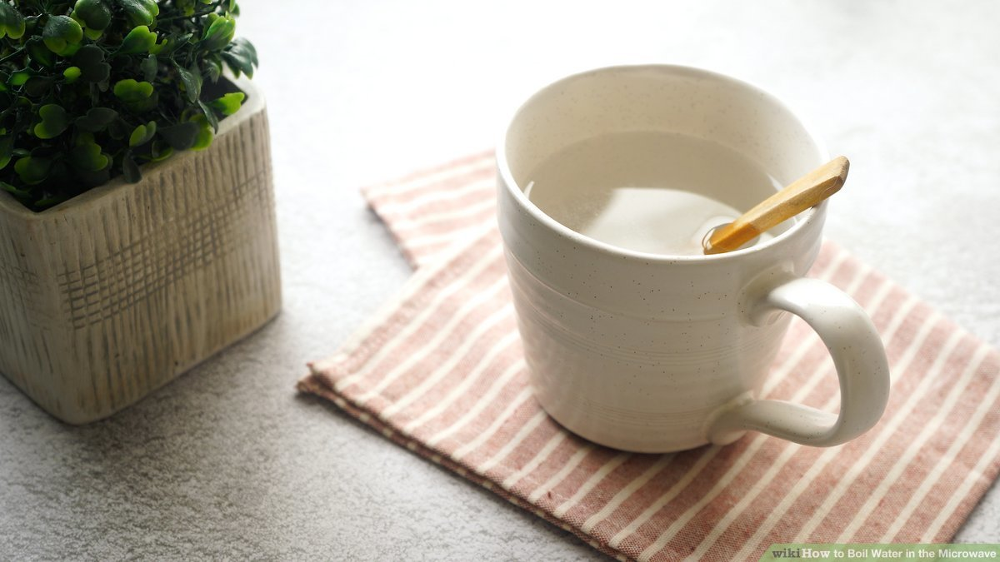

Hot Water

Description
Sometimes you want a hot liquid, but you don't want a big burst of flavor. This easy drink will get you warm and hydrated in no time.
Overview
- Prep
- 1 min
- Cook
- 5 mins
- Additional
- 1 mins
- Total
- 7 mins
- Servings
- 1
- Yield
- 1 cup of water
Ingredients
Steps
- Boil 6-12 ounces of water (depending on the size of your mug) using your method of choice - an electric kettle, a basic stovetop kettle, a sauce pan, or the microwave. (Boil time will vary.)
- Carefully pour the hot water into your mug (unless using the microwave method).
- Wait about 1 minute for the water to cool before enjoying. Caution: hot water can cause severe burns.
- (Optional) Add a squeeze of lemon for a little but of flavor.